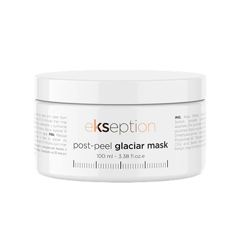

Постпроцедурная охлаждающая маска с ледниковой водой 100 мл EKSEPTION (Испания)
3 244 ₽
@@include('./_btn.html', {text: "В корзину", link: "#", class: "top-section__add2cart btn"})
Ультраосвежающая маска с мгновенным охлаждающим и успокаивающим эффектом идеально подходит для применения после процедуры пилинга. Благодаря ледниковой воде с насыщенным составом восстанавливает минеральный баланс кожи, обеспечивает оптимальное увлажнение. Оказывает себорегулирующее действие, устраняет жирный блеск.
Вода с альпийских ледников Монблана содержит большое количество минералов, таких как кальций и кремний, которые обеспечивают укрепление и реструктуризацию кожи.
Мультиминеральный комплекс, состоящий из цинка, меди и магния, оптимизирует клеточное дыхание и наполняет кожу энергией. Высокое содержание цинка в составе также помогает улучшить состояние жирной кожи, улучшая ее упругость и уменьшая появление морщин.
Уникальная текстура маски, напоминающая лед, оказывает приятный охлаждающий эффект, оставляя после нанесения дышащую защитную пленку.